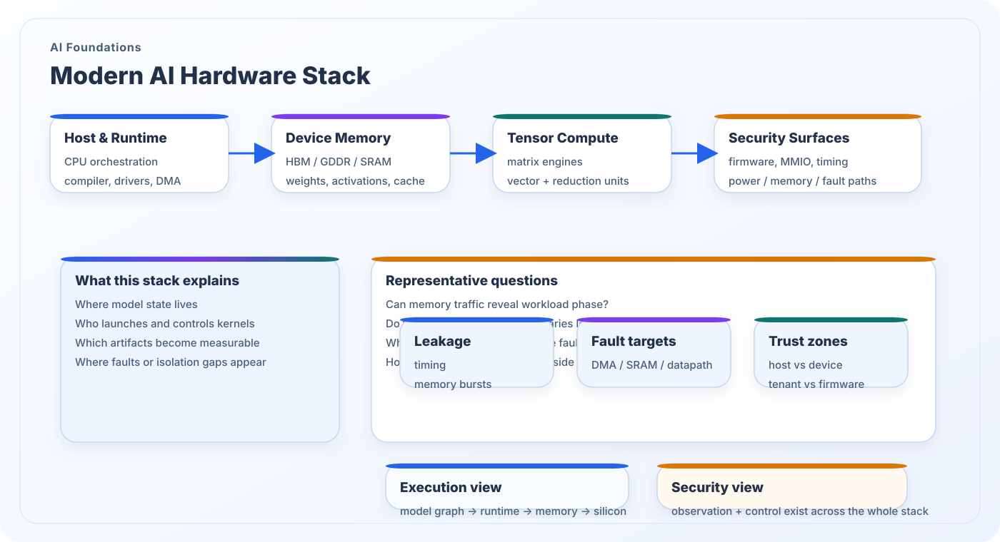

Modern AI Hardware Knowledge
Rigorous AI security analysis requires more than knowing the model architecture. It requires understanding how host software, runtimes, memory hierarchies, tensor engines, interconnects, numeric precision, and scheduling policies shape actual execution on modern AI hardware.
What this topic covers
Traditional platforms were designed for control-centric software, while modern AI hardware is built to sustain large volumes of structured tensor computation. That shift brings specialized matrix engines, deep memory hierarchies, compiler-driven kernel lowering, and heterogeneous execution across CPUs, GPUs, NPUs, or accelerators in the cloud.
For security researchers, this changes the questions worth asking. It is no longer sufficient to ask whether the processor computes correctly. One must also ask where weights and activations live, how kernels are mapped, which firmware and drivers control the device, where trust boundaries lie, and what timing, memory, power, or communication artifacts become observable outside the ideal model graph.
Security significance
- It connects model semantics to physical execution, which is essential for side-channel, fault, and isolation analysis.
- It clarifies where host/runtime control ends and where device-local state becomes security-relevant.
- It helps identify observation points such as DMA, memory traffic, firmware control paths, and on-die compute blocks.
- It turns abstract AI security concerns into measurable system and hardware questions.

Core technical layers
These layers are repeatedly involved when an AI workload is compiled, launched, executed, and measured on real hardware.
Host and runtime control
The host CPU, drivers, compiler, and runtime decide kernel launch order, buffer ownership, DMA setup, synchronization, and fallback behavior. These layers often define the first trust boundary around the accelerator.
Device memory and data residency
Weights, activations, optimizer state, and KV-cache do not simply “exist on the chip.” They occupy specific memory tiers with different visibility, latency, and protection guarantees. Placement strongly affects leakage and integrity exposure.
Tensor compute and dataflow
Matrix engines, tensor cores, vector units, and reduction paths implement AI kernels through tiling, blocking, reuse, and precision-aware scheduling. These choices shape the device behavior seen through timing, bandwidth, power, or faults.
Security questions that follow
Once the hardware stack is visible, AI security analysis becomes more concrete and implementation-aware.
Observation surface
Which signals leave the ideal mathematical abstraction? Examples include memory bursts, service latency, scheduler activity, power traces, telemetry counters, or interconnect traffic.
Fault and integrity surface
Where can disturbances change execution? Practical targets include firmware-controlled state, DMA descriptors, local memories, arithmetic datapaths, voltage rails, or timing assumptions in host-device coordination.
Isolation and trust boundaries
Who controls buffers, firmware, and runtime policy? Multi-tenant accelerators, cloud deployment, or edge platforms often blur the boundary between user-visible software and hidden device-local mechanisms.
Back to the research map
Return to the structured research overview or continue browsing the other AI foundations and AI security themes.